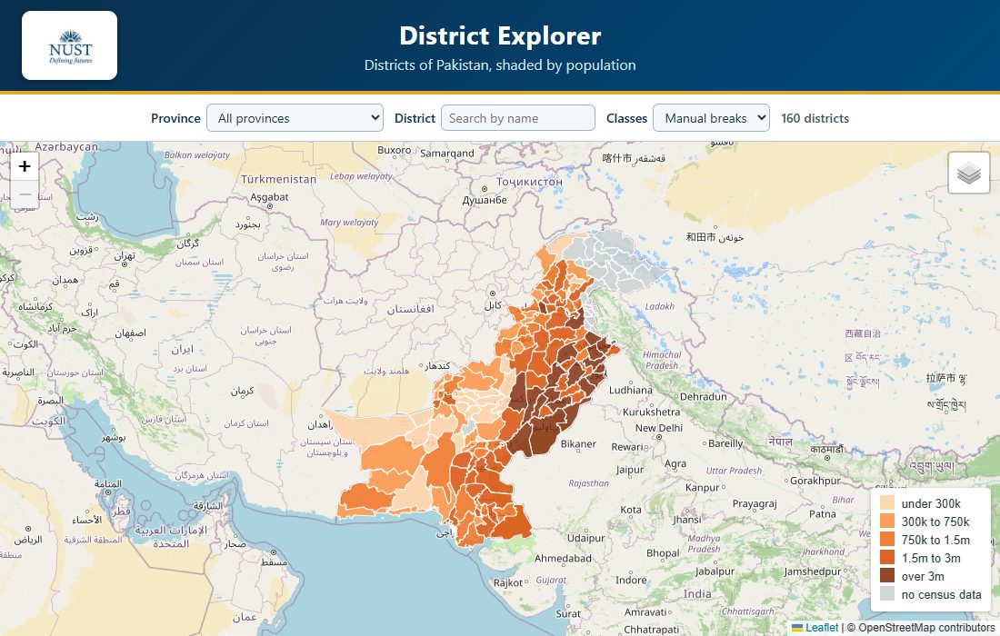
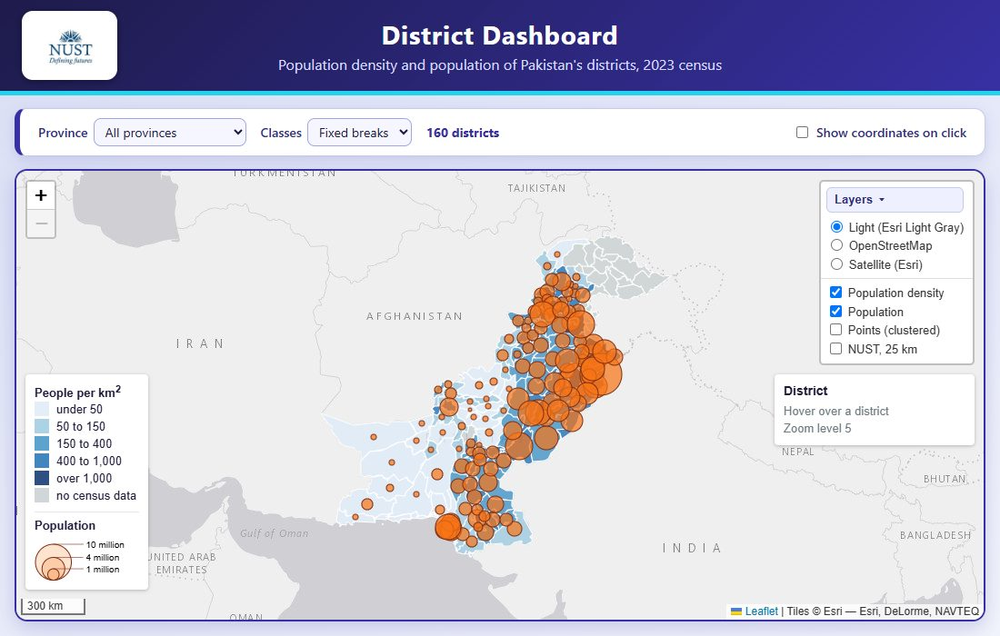

First Web Map
A first web page with a Leaflet map of Islamabad: markers, popups and circles around the NUST campus, IGIS and the Faisal Mosque, published with GitHub Pages.
Fall 2026 · MS Remote Sensing and GIS
Each lab has a live map and a written report.
A first web page with a Leaflet map of Islamabad: markers, popups and circles around the NUST campus, IGIS and the Faisal Mosque, published with GitHub Pages.

Pakistan's 160 districts, built from a shapefile: converted to GeoJSON, shaded by 2023 census population, with popups, a legend and a province filter.
Extras: satellite basemap, hover highlight, name search, sorted province list and quantile classes.

The district map turned into a dashboard: three basemaps and a layer control, density shading with hover highlighting and an info panel, population as proportional circles in their own pane, and map events.
Extras: province filter, SVG-versus-canvas timing, marker clusters, density labels, a remembered view and quantile classes.
The 160 districts move into a spatial database. Django serves them as GeoJSON from PostGIS, the admin panel edits them, and Leaflet draws what it receives. PostGIS also answers which district contains a clicked point.
Extras: province filter in the database, Facility points, a second admin user and grey districts without census data. The map here is a static snapshot; the full app runs on a local PostGIS.